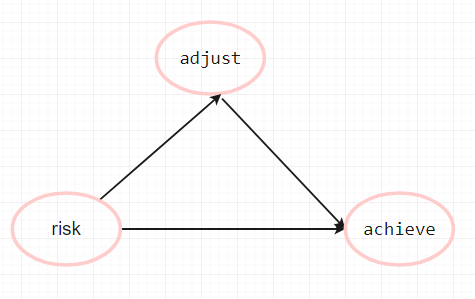
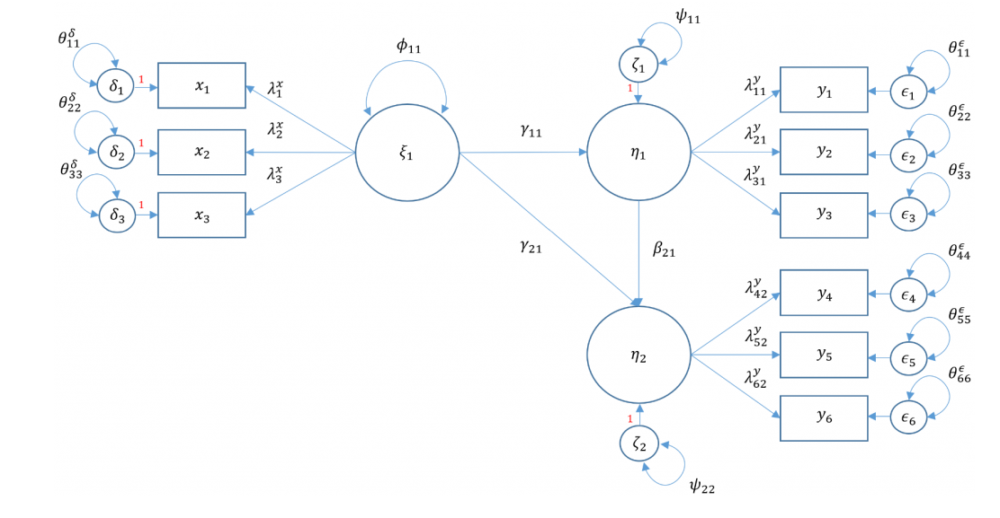

这是用R做结构方程的案例, 最下方有视频教程.
目的
这篇教程目的是介绍如何使用R语言的lavaan包来做结构方程模型，
如果你不清楚什么是结构方程（SEM）， 建议你先看这个介绍视频。
当然， 我们会在教程的前面简要介绍结构方程的概念， 以便于我们教程的完整性。
案例介绍
这是一个研究学生的学业成绩影响因素的研究，
目前数据已经采集技术， 你可以在这里下载这个数据,
这个数据有9个观测指标（9个变量）：Motivation（冬季）, Harmony, Stability, Negative Parental Psychology, SES, Verbal IQ, Reading, Arithmetic and Spelling（动机、和谐、稳定、消极的父母心理、SES、语言智力、阅读、算术和拼写）。研究员假设三个潜变量：Adjustment, Risk, Achievement， 他们的测量指标如下， 其中包含了变量名及其解释：
Adjustment
- motiv Motivation
- harm Harmony
- stabi Stability
Risk
- ppsych (Negative) Parental Psychology
- ses SES
- verbal Verbal IQ
Achievement
- read Reading
- arith Arithmetic
- spell Spelling
模型表示
对于任何结构方程研究， 你最好事先绘制理论模型图， 下面就是我们的假定模型图：
根据理论模型， 如果用数学符号表示， 我们可以绘制具有数学意义的模型图：
我们先来解释一下图中的符号的意义：
- observed variable: 显变量或者叫观测指标， 就是在你的数据中有一列数据可以代表该变量， 图中用矩形表示
- latent variable: 潜变量， 数据中不存在， 但是可以在模型中构建出来，图中用椭圆表示
- exogenous variable: 外生变量， 可以认为是自变量， 就是在模型中没有变量预测它， 它用于预测其他变量， 它既可以是显变量
$x$也可以是潜变量$\xi$ - endogenous variable: 内生变量， 可以认为是因变量， 只要有箭头指向它， 它就可以被成为是内生变量， 即可以是显变量
$y$也可以是潜变量$\eta$ - measurement model: 测量模型， 多个显变量和一个潜变量构成的结构， 比如图中
$\xi_1$与$x_1 x_2 x_3$构成的结构 - factor: 因子， 一个潜变量， 由多个显变量所定义， 例如图中的
$\eta_1 \eta_2 \xi_1$ - loading: 因子载荷， 因子和观测指标之间的连线， 可以用字母
$\lambda$表示 - structural model: 由自变量和因变量构成的结构， 比如
$\eta_1 \eta_2 \xi_1$及其连线构成的结构 - regression path: 回归路径， 自变量和因变量之间的连线， 用字母
$\gamma\$
R代码
有了数据和模型， 下一步就是如何用R来表示模型和估计模型。
模型的表示
R中最常用的SEM包就是lavaan , 它定义了一些模型表示的方法, 列在这里:
- ~ 波浪号, 表示观测变量的回归关系,
(e.g., y ~ x) - =~ 等号波浪号, 用于表示测量模型,
(e.g., f =~ q + r + s), f表示潜变量, q r s 表示测量指标 ~~协方差(e.g., x ~~ x)- ~1 截距或者均值, 比如
x ~ 1估计了变量x的均值 *固定参数, 比如f =~ 1*q意思是f对q的因子载荷固定为1- NA* 自由参数或者载荷
(e.g., f =~ NA*q) - a* 参数标签, 比如
f =~ a*q, 意思是f对q的因子载荷是a, 在设定模型constrants时非常有用
参考这个模型图, 我们有三个潜变量, 每个潜变量有三个测量指标, 测量模型的表示为:
1 | adjust =~ motiv + harm + stabi |
结构方程需要你清楚模型中有多少个因变量, 因为有多少因变量, 就可以写几行回归方程, 识别因变量最好的方法就是看有几个变量被箭头指向,
根据模型图, 我们得出两个回归方程, 结构模型的表示:
1 | adjust ~ risk |
R 代码
1 | # m6b就是模型代码, 它在R中数据类型是字符串 |
实战
安装和加载库
1 | install.packages("lavaan", dependencies=TRUE) |
Installing package into 'C:/Users/syd/AppData/Local/R/win-library/4.2' (as 'lib' is unspecified)
package 'lavaan' successfully unpacked and MD5 sums checked The downloaded binary packages are in C:\Users\syd\AppData\Local\Temp\Rtmpa2kU3N\downloaded_packages
This is lavaan 0.6-12 lavaan is FREE software! Please report any bugs.
下载数据
这是一个网络数据, 你可以下载到本地, 点这里,
你也可以直接加载到R中.
1 | dat <- read.csv("https://stats.idre.ucla.edu/wp-content/uploads/2021/02/worland5.csv") |
1 | head(dat) # 查看数据前几行 |
| motiv | harm | stabi | ppsych | ses | verbal | read | arith | spell | |
|---|---|---|---|---|---|---|---|---|---|
| <dbl> | <dbl> | <dbl> | <dbl> | <dbl> | <dbl> | <dbl> | <dbl> | <dbl> | |
| 1 | -7.907122 | -5.075312 | -3.138836 | -17.800210 | 4.766450 | -3.633360 | -3.488981 | -9.989121 | -6.567873 |
| 2 | 1.751478 | -4.155847 | 3.520752 | 7.009367 | -6.048681 | -7.693461 | -4.520552 | 8.196238 | 8.778973 |
| 3 | 14.472570 | -4.540677 | 4.070600 | 23.734260 | -16.970670 | -3.909941 | -4.818170 | 7.529984 | -5.688716 |
| 4 | -1.165421 | -5.668406 | 2.600437 | 1.493158 | 1.396363 | 21.409450 | -3.138441 | 5.730547 | -2.915676 |
| 5 | -4.222899 | -10.072150 | -6.030737 | -5.985864 | -18.376400 | -1.438816 | -2.009742 | -0.623953 | -1.024624 |
| 6 | 4.868769 | 3.029841 | -7.648277 | 14.668790 | -2.235039 | -6.826892 | 0.822650 | 5.045174 | 0.904154 |
根据前面测量模型的代码, 我们知道, 各个变量的意义,
- adjust的测量指标是: motiv + harm + stabi
- risk 的测量指标是: verbal + ses + ppsych
- achieve 的测量指标是: read + arith + spell
估计模型
1 | # m6b就是模型代码, 它在R中数据类型是字符串 |
- $header
- $lavaan.version
- '0.6-12'
- $sam.approach
- FALSE
- $optim.method
- 'nlminb'
- $optim.iterations
- 112
- $optim.converged
- TRUE
- $optim
- $estimator
- 'ML'
- $estimator.args
- $optim.method
- 'nlminb'
- $npar
- 21
- $eq.constraints
- FALSE
- $nrow.ceq.jac
- 0
- $nrow.cin.jac
- 0
- $nrow.con.jac
- 0
- $con.jac.rank
- 0
- $data
- $ngroups
- 1
- $nobs
- 500
- $test
- $standard =
- $test
- 'standard'
- $stat
- 148.981777928469
- $stat.group
- 148.981777928469
- $df
- 24
- $refdistr
- 'chisq'
- $pvalue
- 0
- $fit
- npar
- 21
- fmin
- 0.148981777928469
- chisq
- 148.981777928469
- df
- 24
- pvalue
- 0
- baseline.chisq
- 2597.97194315292
- baseline.df
- 36
- baseline.pvalue
- 0
- cfi
- 0.951216570399027
- tli
- 0.92682485559854
- logl
- -15517.8567323358
- unrestricted.logl
- -15443.3658433715
- aic
- 31077.7134646715
- bic
- 31166.2202347384
- ntotal
- 500
- bic2
- 31099.5649367478
- rmsea
- 0.102054633215282
- rmsea.ci.lower
- 0.0866822262014351
- rmsea.ci.upper
- 0.118076367501006
- rmsea.pvalue
- 4.04968328870936e-08
- srmr
- 0.0405618347716423
- $pe
A data.frame: 24 × 11 lhs op rhs exo est se z pvalue std.lv std.all std.nox <chr> <chr> <chr> <int> <dbl> <dbl> <dbl> <dbl> <dbl> <dbl> <dbl> adjust =~ motiv 0 1.0000000 0.00000000 NA NA 9.3236112 0.9332948 0.9332948 adjust =~ harm 0 0.8844138 0.04061818 21.773843 0.000000e+00 8.2459306 0.8254189 0.8254189 adjust =~ stabi 0 0.6947893 0.04345933 15.987116 0.000000e+00 6.4779457 0.6484433 0.6484433 risk =~ verbal 0 1.0000000 0.00000000 NA NA 7.3185705 0.7325900 0.7325900 risk =~ ses 0 0.8070235 0.07608457 10.606927 0.000000e+00 5.9062586 0.5912174 0.5912174 risk =~ ppsych 0 -0.7701249 0.07532976 -10.223381 0.000000e+00 -5.6362132 -0.5641858 -0.5641858 achieve =~ read 0 1.0000000 0.00000000 NA NA 9.4035951 0.9413013 0.9413013 achieve =~ arith 0 0.8372176 0.03426034 24.436932 0.000000e+00 7.8728550 0.7880740 0.7880740 achieve =~ spell 0 0.9760348 0.02842407 34.338325 0.000000e+00 9.1782364 0.9187428 0.9187428 adjust ~ risk 0 0.5992803 0.07647237 7.836560 4.662937e-15 0.4704052 0.4704052 0.4704052 achieve ~ adjust 0 0.3747906 0.04635701 8.084875 6.661338e-16 0.3716028 0.3716028 0.3716028 achieve ~ risk 0 0.7243599 0.07828439 9.252929 0.000000e+00 0.5637503 0.5637503 0.5637503 motiv ~~ motiv 0 12.8702817 2.85223254 4.512354 6.411220e-06 12.8702817 0.1289607 0.1289607 harm ~~ harm 0 31.8046281 2.97294639 10.698016 0.000000e+00 31.8046281 0.3186837 0.3186837 stabi ~~ stabi 0 57.8362265 3.99023894 14.494427 0.000000e+00 57.8362265 0.5795213 0.5795213 verbal ~~ verbal 0 46.2385229 4.78776498 9.657643 0.000000e+00 46.2385229 0.4633119 0.4633119 ses ~~ ses 0 64.9161012 4.97522402 13.047875 0.000000e+00 64.9161012 0.6504620 0.6504620 ppsych ~~ ppsych 0 68.0331022 5.06751791 13.425330 0.000000e+00 68.0331022 0.6816944 0.6816944 read ~~ read 0 11.3724048 1.60764520 7.073952 1.505907e-12 11.3724048 0.1139519 0.1139519 arith ~~ arith 0 37.8181571 2.68041969 14.109043 0.000000e+00 37.8181571 0.3789394 0.3789394 spell ~~ spell 0 15.5599796 1.69864710 9.160219 0.000000e+00 15.5599796 0.1559116 0.1559116 adjust ~~ adjust 0 67.6938212 6.06585950 11.159807 0.000000e+00 0.7787189 0.7787189 0.7787189 risk ~~ risk 0 53.5614747 6.75713280 7.926657 2.220446e-15 1.0000000 1.0000000 1.0000000 achieve ~~ achieve 0 30.6848664 3.44941260 8.895679 0.000000e+00 0.3470055 0.3470055 0.3470055
展示模型的概览:
1 | show(fit6b) |
lavaan 0.6-12 ended normally after 112 iterations Estimator ML Optimization method NLMINB Number of model parameters 21 Number of observations 500 Model Test User Model: Test statistic 148.982 Degrees of freedom 24 P-value (Chi-square) 0.000
- 获取模型拟合参数
1 | fits = fitMeasures(fit6b) |
rmsea: 0.102054633215282
1 | fits[c('chisq', 'df', 'pvalue', 'cfi' ,'rmsea', 'srmr', 'aic')] |
- chisq
- 148.981777928469
- df
- 24
- pvalue
- 0
- cfi
- 0.951216570399027
- rmsea
- 0.102054633215282
- srmr
- 0.0405618347716423
- aic
- 31077.7134646715
计算中介效应和总效应
我们注意到, 这是一个中介模型, 我们想要检验中介效应以及总效应是否显著, 可以使用下面的代码:
1 | # m6b就是模型代码, 它在R中数据类型是字符串 |
- $header
- $lavaan.version
- '0.6-12'
- $sam.approach
- FALSE
- $optim.method
- 'nlminb'
- $optim.iterations
- 112
- $optim.converged
- TRUE
- $optim
- $estimator
- 'ML'
- $estimator.args
- $optim.method
- 'nlminb'
- $npar
- 21
- $eq.constraints
- FALSE
- $nrow.ceq.jac
- 0
- $nrow.cin.jac
- 0
- $nrow.con.jac
- 0
- $con.jac.rank
- 0
- $data
- $ngroups
- 1
- $nobs
- 500
- $test
- $standard =
- $test
- 'standard'
- $stat
- 148.981777928469
- $stat.group
- 148.981777928469
- $df
- 24
- $refdistr
- 'chisq'
- $pvalue
- 0
- $fit
- npar
- 21
- fmin
- 0.148981777928469
- chisq
- 148.981777928469
- df
- 24
- pvalue
- 0
- baseline.chisq
- 2597.97194315292
- baseline.df
- 36
- baseline.pvalue
- 0
- cfi
- 0.951216570399027
- tli
- 0.92682485559854
- logl
- -15517.8567323358
- unrestricted.logl
- -15443.3658433715
- aic
- 31077.7134646715
- bic
- 31166.2202347384
- ntotal
- 500
- bic2
- 31099.5649367478
- rmsea
- 0.102054633215282
- rmsea.ci.lower
- 0.0866822262014351
- rmsea.ci.upper
- 0.118076367501006
- rmsea.pvalue
- 4.04968328870936e-08
- srmr
- 0.0405618347716423
- $pe
A data.frame: 26 × 12 lhs op rhs label exo est se z pvalue std.lv std.all std.nox <chr> <chr> <chr> <chr> <int> <dbl> <dbl> <dbl> <dbl> <dbl> <dbl> <dbl> adjust =~ motiv 0 1.0000000 0.00000000 NA NA 9.3236112 0.9332948 0.9332948 adjust =~ harm 0 0.8844138 0.04061818 21.773843 0.000000e+00 8.2459306 0.8254189 0.8254189 adjust =~ stabi 0 0.6947893 0.04345933 15.987116 0.000000e+00 6.4779457 0.6484433 0.6484433 risk =~ verbal 0 1.0000000 0.00000000 NA NA 7.3185705 0.7325900 0.7325900 risk =~ ses 0 0.8070235 0.07608457 10.606927 0.000000e+00 5.9062586 0.5912174 0.5912174 risk =~ ppsych 0 -0.7701249 0.07532976 -10.223381 0.000000e+00 -5.6362132 -0.5641858 -0.5641858 achieve =~ read 0 1.0000000 0.00000000 NA NA 9.4035951 0.9413013 0.9413013 achieve =~ arith 0 0.8372176 0.03426034 24.436932 0.000000e+00 7.8728550 0.7880740 0.7880740 achieve =~ spell 0 0.9760348 0.02842407 34.338325 0.000000e+00 9.1782364 0.9187428 0.9187428 adjust ~ risk a 0 0.5992803 0.07647237 7.836560 4.662937e-15 0.4704052 0.4704052 0.4704052 achieve ~ adjust b 0 0.3747906 0.04635701 8.084875 6.661338e-16 0.3716028 0.3716028 0.3716028 achieve ~ risk c 0 0.7243599 0.07828439 9.252929 0.000000e+00 0.5637503 0.5637503 0.5637503 motiv ~~ motiv 0 12.8702817 2.85223254 4.512354 6.411220e-06 12.8702817 0.1289607 0.1289607 harm ~~ harm 0 31.8046281 2.97294639 10.698016 0.000000e+00 31.8046281 0.3186837 0.3186837 stabi ~~ stabi 0 57.8362265 3.99023894 14.494427 0.000000e+00 57.8362265 0.5795213 0.5795213 verbal ~~ verbal 0 46.2385229 4.78776498 9.657643 0.000000e+00 46.2385229 0.4633119 0.4633119 ses ~~ ses 0 64.9161012 4.97522402 13.047875 0.000000e+00 64.9161012 0.6504620 0.6504620 ppsych ~~ ppsych 0 68.0331022 5.06751791 13.425330 0.000000e+00 68.0331022 0.6816944 0.6816944 read ~~ read 0 11.3724048 1.60764520 7.073952 1.505907e-12 11.3724048 0.1139519 0.1139519 arith ~~ arith 0 37.8181571 2.68041969 14.109043 0.000000e+00 37.8181571 0.3789394 0.3789394 spell ~~ spell 0 15.5599796 1.69864710 9.160219 0.000000e+00 15.5599796 0.1559116 0.1559116 adjust ~~ adjust 0 67.6938212 6.06585950 11.159807 0.000000e+00 0.7787189 0.7787189 0.7787189 risk ~~ risk 0 53.5614747 6.75713280 7.926657 2.220446e-15 1.0000000 1.0000000 1.0000000 achieve ~~ achieve 0 30.6848664 3.44941260 8.895679 0.000000e+00 0.3470055 0.3470055 0.3470055 indirect := a*b indirect 0 0.2246047 0.03257583 6.894826 5.393019e-12 0.1748039 0.1748039 0.1748039 total := a*b+c total 0 0.9489646 0.08175637 11.607225 0.000000e+00 0.7385542 0.7385542 0.7385542
视频教程
注意
统计咨询请加QQ 2726725926, 微信 shujufenxidaizuo, SPSS统计咨询是收费的, 不论什么模型都可以, 只限制于1个研究内.
跟我学统计可以代做分析, 每单几百元不等.
本文由jupyter notebook转换而来, 您可以在这里下载notebook
可以在微博上@mlln-cn向我免费题问
请记住我的网址: mlln.cn 或者 jupyter.cn